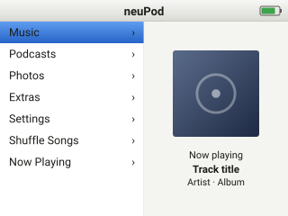
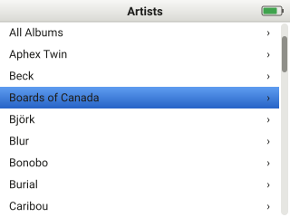
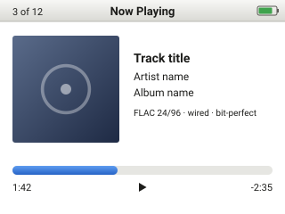
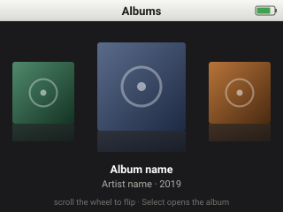
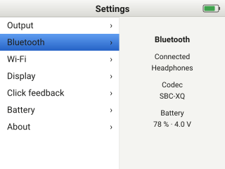

UI mock-ups¶
Text, number, level, choice and date entry with the click wheel is one library: Wheel input widgets. Wi-Fi screens: Wi-Fi.
Target: the Phase 1 panel, 320×240 landscape. Each screen is an original drawing at the
panel's native size (SVG, viewBox="0 0 320 240"); the look follows the classic click-wheel
player layout — split menu with artwork, blue selection bar — lightly modernised. These are
design intent, not screenshots of any existing firmware.
Click-wheel vocabulary used below: Menu (top button, goes back), Select (centre), Play/Pause (bottom), Left / Right (previous / next), scroll (finger on the ring).
Main menu¶

- Scroll moves the selection bar through Music, Podcasts, Photos, Extras, Settings, Shuffle Songs, Now Playing. Scroll acceleration follows the Rockbox constants (4 counts per step, velocity-based acceleration).
- Select opens the highlighted item. Menu does nothing at the top level.
- Play/Pause toggles playback without leaving the menu; the right pane shows the current track's artwork and title, or a clock when nothing is playing.
- Left / Right skip tracks in the background.
Library — artists¶

- Full-width list; scroll bar on the right shows position in long lists. Fast scrolling shows a letter overlay (not drawn) so a 100k-track library is navigable.
- Select descends (artist → albums → tracks); Menu ascends one level.
- Right on an artist jumps to All Albums for that artist; Left returns to the previous level without animation.
- The same template serves Albums, Songs, Genres, Composers, Playlists and Podcasts.
Now playing¶

- Shows artwork (see Now Playing art), title, artist, album, the format badge (e.g. FLAC 24/96, wired, bit-perfect) and the progress bar with elapsed and remaining time.
- Scroll adjusts volume by default; a first Select switches the scroll to seek (bar highlights), a second Select returns to volume. Pressing Select again shows rating / shuffle / repeat options (not drawn).
- Play/Pause toggles; Left / Right previous / next track (hold Right to fast-forward).
- Menu returns to the list the track was chosen from.
- On Bluetooth output the badge reads the negotiated codec (e.g. SBC-XQ, AAC).
Album browser¶

- Dark full-screen carousel of album artwork; the centre album is enlarged with a reflection.
- Scroll flips through albums with acceleration; Select opens the centre album's track list; Menu returns to the library.
- This view is the one place the UI uses the panel's colour depth heavily; on the AMOLED candidate the black background also saves power.
Settings¶

- Two-pane: list of settings groups on the left, a live detail pane on the right for the highlighted group (shown: Bluetooth — connected device, codec, battery).
- Select enters a group; inside, scroll changes the value and Select confirms.
- "Click" is where the piezo / haptic / both / off choice lives (the piezo has no driver yet), and "Haptics" holds the actuator (ERM / LRA) and Calibrate rows; hardware decision in Requirements → Reused parts and mechanical.
- "Output" chooses headphone / line / optical / USB when the jack detect cannot decide.
Implemented (stage 2: home menu)¶
Firmware screens in app/ui/ (LVGL, light theme as in the mock-ups above; all drawing is original). Rendering
is partial (two 320x24 strip buffers); the list scrolls with one short animation, everything else is static.
Nothing persists across a reboot yet (settings are RAM only).
Common frame. A status bar on every screen: title in the middle, battery icon and percentage on the right ("--" when the gauge failed its check; green with a charge symbol while charging, red at 15 % or less), and a play/pause glyph slot on the left (empty: nothing plays yet). Menu goes back one screen (nothing at the top level), Select enters. Lists clamp at both ends (no wrap), the selection bar jumps and the list scrolls smoothly when the selection leaves the window; a thin scroll bar shows on long lists.
Scrolling. The wheel reports counts; 4 counts make one list step, and fast movement multiplies it (2x, 4x, 8x
when many counts arrive within 150 ms; the constants UI_COUNTS_PER_STEP, UI_ACCEL_* are in
app/include/runtime_config.h). Each testbed key press is exactly one step.
| Screen | What it does now |
|---|---|
| Home | Left list: Music, Podcasts, Photos, Extras, Settings, Shuffle Songs, Now Playing. Right pane follows the player (polled on every UI tick, and at once when Home comes back on top; the clock and card summary refresh twice a second). Playing a file: the 96 px art box shows the album art thumbnail (the note when there is none), then title (file name when there is no title tag), artist, and a play or pause symbol with the queue position (3 of 12, or just Playing / Paused without a queue; Finished once the last track has ended, and Error, Verifying or Verified for those player states, detail stays on Now Playing). Test tone: note, tone name, Test signal, play symbol. Nothing playing: the artwork placeholder, Nothing playing, the clock (--:-- until the time is set) and a card summary (type and size, or No card). |
| Music | Artists, Albums, Songs, Genres, Playlists; each opens an Empty - no library yet list. |
| Podcasts, Photos, Shuffle Songs | Placeholder screens saying what is missing. |
| Now Playing | Live: title, artist and album with track number from the file's tags (the file name if there is no title), a format badge such as FLAC 24/96, MP3 320k or ALAC 16/44.1, Playing / Paused / Finished or the error, elapsed and remaining time with a progress bar, and the volume with a level bar. The wheel is the volume (2 dB per step, starts at -30 dB); Play (or Select) pauses and resumes, and on Finished (or after a FLAC MD5 check) plays the same file again from the start, with sound; Right / Left = next / previous track of the queue (Previous more than 3 s into a track restarts it; Next on the last track stops and the screen goes idle); with more than one track queued the status line reads Playing - 3 of 12; Menu goes back while the sound continues. Without anything playing it says Nothing playing. Play/Pause works on every screen. |
| Extras | Files, Test tone. |
| Extras, Test tone | Three rows, each On / Off: 1 kHz tone, L/R ident (1 s left, then 1 s right) and Scale (C4 up to C5 and back, looping). Select starts or stops the highlighted one (starting one stops the other); Left / Right = volume; the screen shows the volume and the level reaching the DAC. Leaving the screen stops the sound. See Audio. |
| Extras, Files | Read-only browser of the card: folders first then files, alphabetical, hidden entries skipped (a name starting with a dot, or the FAT hidden / system attribute: System Volume Information, $RECYCLE.BIN; the host build has no such attribute, so only the dot rule applies there), size on the right, a chevron on folders. Select opens a folder, Menu goes up (at the root it leaves). Select on a .wav, .flac, .mp3 or .m4a (ALAC) plays it and opens Now Playing; the rest of that folder (playable files only, in the order shown, from the chosen one) is queued and plays on by itself, gaplessly when the rate matches; Right on a .flac verifies its MD5 without sound (see Audio). Other files show Not a playable file for 3 s; an AAC .m4a opens Now Playing with AAC not supported yet. At most 256 entries per folder are kept (... more (first 256 shown) row after them); names longer than 63 bytes are cut at a character boundary. Directory reads run in the storage task, so the screen shows Loading... and keeps responding; without a working card it says why (Storage unavailable: no card). |
| Settings | Two panes (groups left, live summary right). About: version, build hash, platform, uptime, heap free, audio blocks / underruns / jitter, core 1 stack, and the result of every boot check. Display: Select opens a three-row list: Backlight (Select, then scroll adjusts it in 5 % steps, never below 5 %), Auto-dim (Select toggles On/Off, default On) and Dim after (Select cycles 10 s / 15 s / 30 s / 1 min / 2 min / 5 min, default 30 s; greyed and inert while Auto-dim is Off); all saved on the card. After the idle time with no input the backlight steps down to 10 % (a set level below 10 % is left alone, idle never brightens); any input restores the set level at once and is delivered to the screen as normal. The idle clock starts when the menu appears. The backlight-off stage is not built yet (backlog UI-5). Click: Select cycles Haptic / Off today (default Haptic, which needs the haptic driver); Piezo and Both join the cycle once a piezo driver exists; saved on the card, and an older saved On/Off still reads as Haptic/Off. Haptics: Select opens a two-row list: Actuator (Select toggles ERM / LRA; a changed type calibrates itself) and Calibrate (Select runs the auto-calibration, about a second; shows Not needed / Not done / Running... / Done / Failed); see I2C peripherals. Gapless playback: Select toggles On/Off (default On); saved on the card; Off keeps the auto-advance but with the ordinary stop and start between tracks. Resume playing: Select toggles On/Off (default Off); saved on the card. Off: the last track comes back paused at its place. On: if the player was playing when it was last used, it plays on again at boot (if it was paused or stopped, it still comes back paused). Bluetooth: status (Off / Starting / On / Scanning / Unavailable with the reason), the local address and Scan for devices, which opens the Devices screen: it starts a scan as it opens and fills in live; its first row is Stop scanning / Scan again, then the devices found: audio devices (speaker symbol) first with a signal meter (see below), others greyed out, up to 12. Select on an audio device pairs with it (Bluetooth): the scan stops, the row shows busy dots and "Pairing...", then "Paired, no audio yet" (the device is now remembered; the link is not kept open until audio arrives in a later update, so it may drop by itself to "Not connected") or "Failed: * is remembered; each name once, with its strongest access point; Select on one starts the join flow, Menu goes back), Other network..., time zone, the time (set by hand if there is no network), Wi-Fi while playing; see Wi-Fi. Storage: card type, size, filesystem, mode, free space (computed by the storage task, computing... until done). Battery: voltage, charge, rate, state, alerts, gauge status; live, once a second. |
Now Playing art¶
The 112 x 112 box at the top left of Now Playing shows the album art of the track that is playing (the layout is unchanged: title, artist and album to its right, progress below, all at 320 x 240).
| State | What the box shows |
|---|---|
| Track just started, art being found or decoded | The dark box with a note glyph (the audio always starts first; art never delays it) |
| JPEG found | The picture, kept in proportion and centred, with the dark box as letterbox bars |
| No art, PNG, progressive JPEG, damaged JPEG, picture too large (over 5120 px) | The note glyph |
| Nothing playing, a test tone, an error, or still opening | The note glyph |
Where the picture comes from, in order: the picture inside the file (MP3 ID3v2 APIC / PIC, FLAC PICTURE, MP4 covr; a JPEG is preferred to a PNG, a front cover
to other types), then cover.jpg, folder.jpg, front.jpg in the track's folder (any letter case; that order). An embedded PNG is skipped without being read, and the
folder is then tried. A JPEG that is embedded but progressive or damaged also falls back to the folder files. PNG and progressive JPEG need the PSRAM board
(ADR-0013, amendment of 3 Nov 2026).
How it works: after the track has started, the storage task (core 0, the only user of the card) decodes the JPEG with TJpgDec straight from the card in 512-byte reads, shrunk by the
decoder to 1/1, 1/2, 1/4 or 1/8 (the largest shrink that keeps the long side at 64 pixels or more), one MCU row at a time, and averages it into one 64 x 64 RGB565 thumbnail (8 KB of static RAM); the
whole picture is never in RAM. LVGL shows the thumbnail scaled to fit the box (1.75 times for a full-size thumbnail; soft edges are the price of the RAM). While it decodes, the task keeps the audio data ring topped up, sleeps 1 ms
after every 2 ms of work (so input and UI keep running, the storage task outranks them) and stops as soon as another request is queued (it restarts afterwards). The result is
kept for the album: a track whose folder, album tag and embedded picture size match the last one shows it at once, without decoding again. A big picture takes
roughly a second or two on the bench (the card read dominates); the art: line on the UART gives source, size, scale and time. Decoder working memory (about 8.6 KB at most) comes from the
heap for the length of one decode; if it is not available the note stays. Colour order: the thumbnail is native-order RGB565 like LVGL's draw buffers (the display driver swaps for the panel).
Click feedback. Every list step asks the haptic task for a click (ROM effect 3, a gentle click). The request is a non-blocking queue write: the UI never waits on the I2C bus, requests closer than 35 ms are dropped, and the driver goes back to standby after 2 s without a click or at any error.
Keys. UART testbed: w/k up, s/j down, Enter or e Select, m or Backspace Menu, a Left, d Right,
p or Space Play/Pause. Host window: Up/Down arrows and mouse wheel scroll, Enter Select, Esc/Backspace/m Menu,
Left/Right, Space/p Play/Pause. The wheel, when it works, sends the same events.
Signal meter and busy dots. Wi-Fi network rows, Bluetooth device rows and the Wi-Fi status row show signal as four small bars at the right edge instead of dBm: 4 or 3 bars green, 2 yellow, 1 red (the unlit bars are grey). Wi-Fi: 4 bars at -60 dBm or stronger, 3 down to -70, 2 down to -80, else 1; Bluetooth is 5 dB stronger (-55 / -65 / -75). The thresholds and the 3 dB hysteresis are UI_SIG_* in runtime_config.h; ui_signal_bars() (ui_logic.c, host-tested in test_ui_logic) is a pure function. The Wi-Fi icon in the status bar takes the colour of the joined network's bars and changes only after the signal has moved 3 dB past a threshold, so it does not flicker. A list row whose action is still running (a join started from the Networks list, a Wi-Fi or Bluetooth scan, the radio starting) shows four pulsing dots in the same place: set busy on the row in the list model (ui_list_item_t, alongside bars) for as long as the work lasts and call ui_list_refresh when it changes; the list animates it with one timer that runs only while a visible row is busy. The model owns the end: a Networks join ends when the station is up, the join fails, or UI_BUSY_TIMEOUT_MS (the join deadline) passes.
Console log (UART). Every screen push and pop prints ui: screen 'Title' push|pop [-> 'Revealed'] depth=N lvgl_mem=used/totalB (modals too), and every list step prints ui: sel <screen> <index> '<label>', so the UI can be driven with the testbed keys without seeing the panel. Passwords are never printed: the text widget is not a list.
Host tour. neupod --tour --snapshots DIR walks through the screens by script and writes home, music-menu,
music-empty, extras, files, files-sub, files-many, files-many-end, settings, settings-bt, bt-idle, bt-scanning and bt-found (the Devices screen), bt-pair, about, nowplaying
(PPM) into DIR (the tour's key script predates the longer Settings list, so several of these names no longer show the screen they are named for; use --tour-bt for Bluetooth);
neupod --tour-bt --snapshots DIR pairs the first simulated headset and writes settings-bt, bt-idle, bt-found, bt-pairing (busy dots), bt-paired (Devices, Connected), bt-saved (Settings > Bluetooth with the headset rows),
settings-bt-saved (the Settings pane), bt-disconnected, bt-forget-asks, bt-forgotten, bt-failed (a pairing the simulated car kit refuses; ctest bt_tour); neupod --tour-art --snapshots DIR plays three one-track albums (cover file, JPEG inside the FLAC, PNG inside plus a progressive cover) and writes art-cover, art-embedded, art-none (ctest art_tour, checked by art_snapshot).
ctest runs it as runtime_smoke against a small fixture card (build/host/fsroot_fixture,
NEUPOD_FS_ROOT) and writes build/host/snapshots/.
Not yet drawn¶
- Hold-switch lock overlay, charging screen, USB mass-storage ("Connected") screen.
- Podcasts and Photos browsers; the search screen.
- Letter overlay during fast scroll; rating / shuffle / repeat sub-screens.